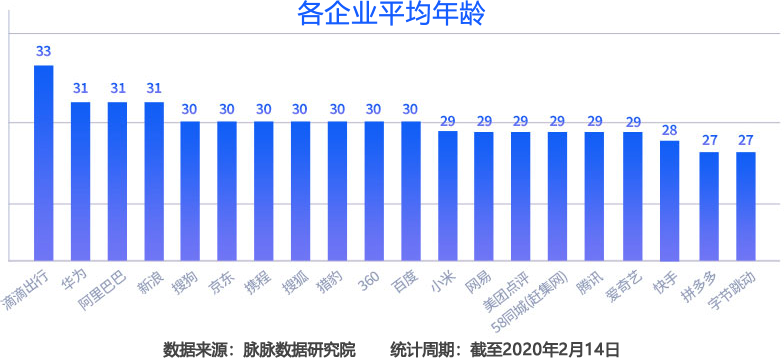

剖析程序员中年危机的深层原因（4000字长文）
前段时间，一个叫 Mary 的程序员大叔在找工作时遇到障碍，他投了很多简历，却没有得到一次面试机会，于是他在中国政府网发表了一封求助信，再次引发了网友对“程序员中年危机”的热议。
求助信的内容如下：
咳咳，45 岁就不要说什么了，就连那些 35/30 岁的码农都不好找工作了。我老家有一个 30 岁的小伙，入职的不算大厂，但是在背调阶段却差点被年龄卡住，这家公司规定新招聘的码农不能超过 30 周岁，而这个小伙还差 2 个月就满 30 周岁了，差点被 pass 掉。
程序员中年危机并非空穴来风，它是确实存在的，而且越来越严重，程序员年轻化是未来的趋势。
根据脉脉的统计结果，中国互联网企业员工平均年龄在 27~33 岁之间，其中最具代表性的是字节跳动，它的员工的平均年龄仅有 27 岁。
除了中国，美帝对码农年龄的“歧视”也越来越明显，尤其是在大厂扎堆的湾区和西雅图，例如 Apple 员工平均年龄是 31 岁，Google 则是 30 岁，Facebook 和 LinkedIn 只有 29 岁。
对于很多公司而言，招聘大龄码农的“性价比”不高。
软件产业的技术栈更新迭代太快，码农们必须持续不断地学习，几年不进步就跟不上了。有些码农学习能力强，能追上最新的技术潮流；有些码农不想学习，或者学不动，慢慢就被甩下了。
以 Web 前端开发为例，10 年以前是 HTML4、CSS2、JavaScript、jQuery 和 Ext 的天下，而现在的前端复杂得就像后端，要学习 HTML5、CSS3、JavaScript ES5/6、React、Vue、Angular、Node、Less、TypeScript，不但知识容量大了几倍，而且还把以前的框架都淘汰了。
我就是一个 Web 前端工程师，2014 年离职以后我的技术栈就没有再更新了，所以现在想找份工作都费劲，这就是不学习导致的后果。
另外，年龄大了以后，体力和精力都干不过年轻人，学习速度慢了，对潮流也不敏感了，越来越守旧，越来越求稳。
虽然应用端的技术栈不断迭代，但是计算机的底层原理一直都没有变化，比如算法/数据结构、编译原理、操作系统等，能够把这些吃透的程序员，一般不容易被替代，越老越有经验，这就是专家型程序员。
但是现实是，只有大厂的码农才会钻研底层，才会注重深度，大部分中小公司的码农一直在做应用层开发，和各种框架打交道，从未向下深扎根系。有些从培训班毕业的程序员，甚至连数据结构都不熟悉，混到退休都干不过大厂的应届生。
涨工资已经是“政治正确”了，如果一家公司两年都不给你涨工资，你大概率会跳槽的吧。
除非你对公司不可或缺，否则公司一般都不愿意死扛这么高的成本，结果就是要么你被优化掉，要么你接受工资天花板。
另外，就算你的能力和年龄匹配，碾压那些刚入职的程序员，你既了解底层，又能手撸代码，还经验丰富，但是那又怎样？除了少量高端岗位和技术驱动型公司，大部分岗位需要的都是搬砖人，能开发应用，写写简单的 SQL 就够了，尤其是外包公司，或者营销驱动型公司。
虽然你变秃了，也变强了，但是却没有用武之地，或者说公司付不起那么多工资。
这些都会导致大龄程序员不能胜任高强度工作，不能大量加班。
这些事情都会消耗一个人大量的精力，弄得身心俱疲。人的精力是有限的，你在家庭上花的精力变多，那么在工作上花的精力就变少。、
除了精力，处理家庭事务还会耽误一个人的时间，导致经常请假，或者不能加班。
即使你没有各种烦心事，老婆/老公和孩子也需要陪伴，如果你长期加班，那么你大概率会和老公/老婆打架，让家庭矛盾升级。
总之，有了家庭和宝宝你就会多出很多事情，消耗大量精力和体力。而你再看看那些年轻人，他们可以长期泡在公司，甚至在公司打地铺过夜，把工作当成生活。
如果是领导，如果涉及业务，那么培养周期就更长了，没有一年时间是不会对行业有感觉的，也不会了解团队的每个人，这会导致领导无法放开手脚做事情。
公司更愿意从内部提拔领导，而不愿意从外部空降领导。
互联网疯狂扩张的早期，教育产业还没反应过来，也没有提前布局，所以软件专业少，培训机构少。另外很多人也没有认识到互联网的巨大能量，转码浪潮还没有形成，人们还不像今天这么趋之若鹜。
这导致早期的码农总体数量比较少，高质量的码农更是稀缺资源，所以公司在招聘时不得不降低要求，让一些能力普通学历普通的码农进入公司。你看看 BAT 的领导，可能还有不少是专科学历。
而到了后期，谁都知道互联网是大势所趋，连一些文科院校都开设了软件专业，校外培训机构更是像雨后春笋一样涌现，这就催生了大量年轻又高质量的码农。
但是如今互联网已经不再是朝阳产业，越来越成熟了，连国家都开始打压巨头了，各家公司也不再像以前一样疯狂扩张规模了，这就使得开发岗位变少，或者说不再大量增加了。然而，转码浪潮没有停止，软件专业和培训机构还在，继续输出大量码农，从而导致码农过剩，找工作逐渐变成了“求职”，只有一些名校毕业或者能力强的码农才能脱颖而出。
另外，早期进入互联网产业的码农们都在不断提升自己，工作十来年也都变成了大佬，这让互联网产业沉淀了不少优质人才，公司在挑选人才时也不再捉襟见肘，甚至有了说“不”的勇气。每个人都是高手，那么每个人也都是普通人了。
其实吧，十年以前互联网公司的招聘要求也没有那么高，能开发出靠谱的应用就差不多；然而现在呢，大厂招聘越来越严格，不但卡学历，还重视内功修为，要求爆肝算法/数据结构、操作系统和编译原理。那些自称大佬的中年码农，你敢说你对计算机的理解超越了 00 后应届生吗？
互联网产业的发展趋势使得码农们越来越内卷了，不但新人卷，老人也卷。
一方面高端岗位不再增加，坑都被填满了，大龄码农的上升通道被锁死；另一方面还有很多学弟学妹们像豺狼一样往前冲，试图拱了那些高端岗位的大白菜。前路被堵死，后路有来者，你说卷不卷？
每个产业都有试错期、发展期、成熟期和衰落期，大量码农在发展期涌入互联网产业，到了成熟期还没有刹住车，所以越来越拥挤，越来越卷。
从产业角度看，互联网发展这么多年了，第一高端岗位不再增加，第二积累了数量庞大的大龄码农，第三有不少能力强的年轻人挤进来，多种原因导致大龄码农在竞争高端岗位时越来越残酷，触碰到了职业天花板。如果企业不愿意承担高昂的工资，大龄码农还有可能被迫转岗，或者被迫主动离职。
实际上，不仅仅是互联网行业，很多其它行业也都是吃青春饭的，比如媒体人、艺术/创意、公关、主持/演绎等。当然也有越老越香的行业，比如医生、教师、会计、公职人员等。
无论身处哪个行业，大龄员工都会面临“丢饭碗”或者“被躺平”的风险，毕竟年龄是一个不可逆的硬伤。不信的话你可以看看现在年轻人的收入，是不是大多数都超越了他们的父辈，因为父辈们从多年以前就开始躺平了，他们被新兴职业远远甩在了身后。
最后我们再来看一下那位给政府写求助信的大叔，天啊，他都 45 岁了，这个年龄的男人，孩子都有可能读大学了，妥妥的老人了。你再看看他辞职的理由，竟然是为了回家陪孩子，天啊，你就不能让老人来陪，或者找个保姆，或者找个家教吗？
一个 45 岁的老男人竟然敢玩裸辞，天啊，谁给他的勇气！你要知道，有多少行业的大叔/阿姨都不敢离职，离职就是丢了工作，离职就得一夜白了头，而这位大叔却觉得程序员频繁跳槽司空见惯，什么时候想要工作都会有。天啊，你以为你是谁啊，简直是被互联网惯坏了。
就算离职，你也得找好下家吧，裸辞对于一个 45 岁的老人来说就是玩火。
假如他真的能力超强，那么他大概率不想在一线写代码吧，他肯定想找个高端岗位，比如小组经理、技术总监、架构师，这种岗位本来就坑少，而且培养成本高，公司更愿意从内部提拔人才，不愿意从外部空降领导，所以找这种工作还得碰运气，不能着急。
45 岁，一个恐怖的年龄，本来应该求稳了，不被主动离职就不错了，而他却有一颗 20 岁的心，在职业发展的琴弦上不断跳跃。在他提出离职的那一刻，HR 和领导有可能还在偷着乐吧，那个年龄比我大、不能指手画脚的家伙终于走了。
求助信的内容如下：
我是一名计算机专业出身的软件开发人员，今年 45 岁，精通 Java 的各种技术体系，包括微服务、大数据等技术，并能应用到实际工作中，帮助所在公司提升、改造所使用的技术框架，业余我还考取了 PMP 项目管理证书、系统架构师证书，成为所在公司的系统架构师、核心技术骨干。我对计算机理论的理解也随着实践的增多越来越深刻，我感觉我的职业生涯进入一生中最好的时刻。
在我儿子读初二上学期时，我辞职回家陪伴儿子。半年后，当我再回来寻找工作机会的时候，却发现连个面试机会都很难得到，更别提发挥自己的专业特长了。
现在国家鼓励延迟退休，我觉得，40 岁以上的有经验的专业技术人员此刻正是自身职业发展的黄金时期，他们找工作时不能被年龄限制了。
咳咳，45 岁就不要说什么了，就连那些 35/30 岁的码农都不好找工作了。我老家有一个 30 岁的小伙，入职的不算大厂，但是在背调阶段却差点被年龄卡住，这家公司规定新招聘的码农不能超过 30 周岁，而这个小伙还差 2 个月就满 30 周岁了，差点被 pass 掉。
程序员中年危机并非空穴来风，它是确实存在的，而且越来越严重，程序员年轻化是未来的趋势。
根据脉脉的统计结果，中国互联网企业员工平均年龄在 27~33 岁之间，其中最具代表性的是字节跳动，它的员工的平均年龄仅有 27 岁。

除了中国，美帝对码农年龄的“歧视”也越来越明显，尤其是在大厂扎堆的湾区和西雅图，例如 Apple 员工平均年龄是 31 岁，Google 则是 30 岁，Facebook 和 LinkedIn 只有 29 岁。
不过美帝大厂的年包很高，应届生也能拿到 100W RMB，是中国的三倍左右。另外美帝也没有那么内卷，码农一般加班不多，假期全休；中国 996，美帝 955。我兔还得继续摸鹰，直到把它摸秃了。
你可以通过 levels.fyi 这个平台查看全球大厂的工资。
公司角度
我之前讲过，公司是一个盈利性组织，不以盈利为目的的公司都是耍流氓。公司不是养老院，公司招聘员工是希望他们创造价值，而且要以最低的成本创造最大的价值，所有不符合这条铁律的员工都有可能不被录用，或者被迫主动离职。对于很多公司而言，招聘大龄码农的“性价比”不高。
1) 年龄大不代表能力强
有些大叔码农的能力和年龄是不匹配的，35 岁的年纪却干着重复的“增删改查”工作，这和刚毕业的应届生，或者已经工作几年的小伙是没有区别的。大叔干的活，弟弟们也能干。软件产业的技术栈更新迭代太快，码农们必须持续不断地学习，几年不进步就跟不上了。有些码农学习能力强，能追上最新的技术潮流；有些码农不想学习，或者学不动，慢慢就被甩下了。
以 Web 前端开发为例，10 年以前是 HTML4、CSS2、JavaScript、jQuery 和 Ext 的天下，而现在的前端复杂得就像后端，要学习 HTML5、CSS3、JavaScript ES5/6、React、Vue、Angular、Node、Less、TypeScript，不但知识容量大了几倍，而且还把以前的框架都淘汰了。
我就是一个 Web 前端工程师，2014 年离职以后我的技术栈就没有再更新了，所以现在想找份工作都费劲，这就是不学习导致的后果。
另外，年龄大了以后，体力和精力都干不过年轻人，学习速度慢了，对潮流也不敏感了，越来越守旧，越来越求稳。
虽然应用端的技术栈不断迭代，但是计算机的底层原理一直都没有变化，比如算法/数据结构、编译原理、操作系统等，能够把这些吃透的程序员，一般不容易被替代，越老越有经验，这就是专家型程序员。
但是现实是，只有大厂的码农才会钻研底层，才会注重深度，大部分中小公司的码农一直在做应用层开发，和各种框架打交道，从未向下深扎根系。有些从培训班毕业的程序员，甚至连数据结构都不熟悉，混到退休都干不过大厂的应届生。
2) 年龄大了工资高
软件/互联网产业是一个巨大的风口，已经持续了 20 年了，有很多热钱涌入，各家公司都在指数级增长，对人才的争夺导致程序员的工资一直在增长，进入大厂的应届生年包都超过 35W 了，更别提那些 30 岁左右的程序员了，待在大厂的年包都超过 50W 了。涨工资已经是“政治正确”了，如果一家公司两年都不给你涨工资，你大概率会跳槽的吧。
除非你对公司不可或缺，否则公司一般都不愿意死扛这么高的成本，结果就是要么你被优化掉，要么你接受工资天花板。
另外，就算你的能力和年龄匹配，碾压那些刚入职的程序员，你既了解底层，又能手撸代码，还经验丰富，但是那又怎样？除了少量高端岗位和技术驱动型公司，大部分岗位需要的都是搬砖人，能开发应用，写写简单的 SQL 就够了，尤其是外包公司，或者营销驱动型公司。
虽然你变秃了，也变强了，但是却没有用武之地，或者说公司付不起那么多工资。
3) 年龄大了身体变差
随着年龄增长，身体素质会逐渐变差，尤其是 30 岁以后，各种职业病开始出现，比如由于颈肩劳损变得不能久坐，由于常年熬夜导致精神萎靡，由于长期注视屏幕导致眼睛干涩，由于频繁使用鼠标导致腕管综合症……这些都会导致大龄程序员不能胜任高强度工作，不能大量加班。
4) 年龄大了事情多
30 多岁的程序员基本都有家庭有宝宝了，这个时候会出现很多新的人生责任和烦恼，比如，孩子可能需要陪伴，孩子可能会生病，孩子可能面临择校，老人可能会生病，婆媳可能发生矛盾，夫妻可能开始厌倦……这些事情都会消耗一个人大量的精力，弄得身心俱疲。人的精力是有限的，你在家庭上花的精力变多，那么在工作上花的精力就变少。、
除了精力，处理家庭事务还会耽误一个人的时间，导致经常请假，或者不能加班。
即使你没有各种烦心事，老婆/老公和孩子也需要陪伴，如果你长期加班，那么你大概率会和老公/老婆打架，让家庭矛盾升级。
总之，有了家庭和宝宝你就会多出很多事情，消耗大量精力和体力。而你再看看那些年轻人，他们可以长期泡在公司，甚至在公司打地铺过夜，把工作当成生活。
5) 培养成本高
我在《程序员离职会给公司带来多大的伤害》一文中提到过，培养一名核心程序员的成本是很高的，至少需要 3~6 个月的时间才能让新人 landing。如果是领导，如果涉及业务，那么培养周期就更长了，没有一年时间是不会对行业有感觉的，也不会了解团队的每个人，这会导致领导无法放开手脚做事情。
公司更愿意从内部提拔领导，而不愿意从外部空降领导。
产业角度
互联网是第三次技术革命，是一个百年不遇的巨大风口，已经持续火热了 25 年，这个期间有大量热钱涌入，催生了多家巨头和独角兽。谁不和互联网发生连接，谁就会出局。如此巨大的一个产业，必然需要数以万计的码农。互联网疯狂扩张的早期，教育产业还没反应过来，也没有提前布局，所以软件专业少，培训机构少。另外很多人也没有认识到互联网的巨大能量，转码浪潮还没有形成，人们还不像今天这么趋之若鹜。
这导致早期的码农总体数量比较少，高质量的码农更是稀缺资源，所以公司在招聘时不得不降低要求，让一些能力普通学历普通的码农进入公司。你看看 BAT 的领导，可能还有不少是专科学历。
而到了后期，谁都知道互联网是大势所趋，连一些文科院校都开设了软件专业，校外培训机构更是像雨后春笋一样涌现，这就催生了大量年轻又高质量的码农。
但是如今互联网已经不再是朝阳产业，越来越成熟了，连国家都开始打压巨头了，各家公司也不再像以前一样疯狂扩张规模了，这就使得开发岗位变少，或者说不再大量增加了。然而，转码浪潮没有停止，软件专业和培训机构还在，继续输出大量码农，从而导致码农过剩，找工作逐渐变成了“求职”，只有一些名校毕业或者能力强的码农才能脱颖而出。
另外，早期进入互联网产业的码农们都在不断提升自己，工作十来年也都变成了大佬，这让互联网产业沉淀了不少优质人才，公司在挑选人才时也不再捉襟见肘，甚至有了说“不”的勇气。每个人都是高手，那么每个人也都是普通人了。
其实吧，十年以前互联网公司的招聘要求也没有那么高，能开发出靠谱的应用就差不多；然而现在呢，大厂招聘越来越严格，不但卡学历，还重视内功修为，要求爆肝算法/数据结构、操作系统和编译原理。那些自称大佬的中年码农，你敢说你对计算机的理解超越了 00 后应届生吗？
互联网产业的发展趋势使得码农们越来越内卷了，不但新人卷，老人也卷。
一方面高端岗位不再增加，坑都被填满了，大龄码农的上升通道被锁死；另一方面还有很多学弟学妹们像豺狼一样往前冲，试图拱了那些高端岗位的大白菜。前路被堵死，后路有来者，你说卷不卷？
每个产业都有试错期、发展期、成熟期和衰落期，大量码农在发展期涌入互联网产业，到了成熟期还没有刹住车，所以越来越拥挤，越来越卷。
总结
从公司的角度看，年轻人能力不差、工资低、体力好、精力旺盛、乐意加班、听从安排，能够胜任很多应用开发岗位。那些大龄码农，除了能力更强经验更多，在其它方面都是劣势，很多公司就会开始权衡。从产业角度看，互联网发展这么多年了，第一高端岗位不再增加，第二积累了数量庞大的大龄码农，第三有不少能力强的年轻人挤进来，多种原因导致大龄码农在竞争高端岗位时越来越残酷，触碰到了职业天花板。如果企业不愿意承担高昂的工资，大龄码农还有可能被迫转岗，或者被迫主动离职。
实际上，不仅仅是互联网行业，很多其它行业也都是吃青春饭的，比如媒体人、艺术/创意、公关、主持/演绎等。当然也有越老越香的行业，比如医生、教师、会计、公职人员等。
无论身处哪个行业，大龄员工都会面临“丢饭碗”或者“被躺平”的风险，毕竟年龄是一个不可逆的硬伤。不信的话你可以看看现在年轻人的收入，是不是大多数都超越了他们的父辈，因为父辈们从多年以前就开始躺平了，他们被新兴职业远远甩在了身后。
最后我们再来看一下那位给政府写求助信的大叔，天啊，他都 45 岁了，这个年龄的男人，孩子都有可能读大学了，妥妥的老人了。你再看看他辞职的理由，竟然是为了回家陪孩子，天啊，你就不能让老人来陪，或者找个保姆，或者找个家教吗？
一个 45 岁的老男人竟然敢玩裸辞，天啊，谁给他的勇气！你要知道，有多少行业的大叔/阿姨都不敢离职，离职就是丢了工作，离职就得一夜白了头，而这位大叔却觉得程序员频繁跳槽司空见惯，什么时候想要工作都会有。天啊，你以为你是谁啊，简直是被互联网惯坏了。
就算离职，你也得找好下家吧，裸辞对于一个 45 岁的老人来说就是玩火。
假如他真的能力超强，那么他大概率不想在一线写代码吧，他肯定想找个高端岗位，比如小组经理、技术总监、架构师，这种岗位本来就坑少，而且培养成本高，公司更愿意从内部提拔人才，不愿意从外部空降领导，所以找这种工作还得碰运气，不能着急。
45 岁，一个恐怖的年龄，本来应该求稳了，不被主动离职就不错了，而他却有一颗 20 岁的心，在职业发展的琴弦上不断跳跃。在他提出离职的那一刻，HR 和领导有可能还在偷着乐吧，那个年龄比我大、不能指手画脚的家伙终于走了。
关注公众号「站长严长生」，在手机上阅读所有教程，随时随地都能学习。内含一款搜索神器，免费下载全网书籍和视频。

微信扫码关注公众号